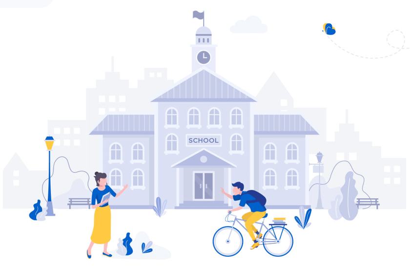
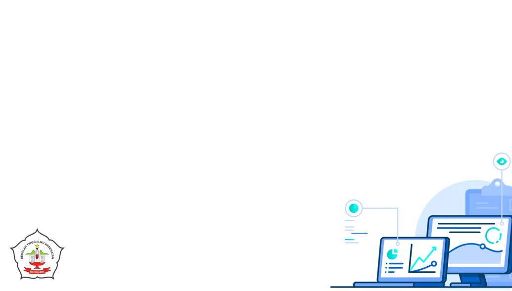

Sekilas
STIKES Insan Cendekia Medika digagas atas idealisme dan arah pendidikan yang berkembang di Indonesia dan Jawa Timur khususnya. Tumbuh dan berkembangnya masyarakat menuntut adanya pelayanan publik yang memadai, profesional, dan Berakhlakul Karimah. Atas prakarsa Yayasan SAMODRA ILMU CENDEKIA yang berpusat di Jl. Raya Ijen 24 Mojokerto, maka beridirilah STIKES ICME yang di deklarasikan pada 29 September 2005.

One Day Service!
Prosess pendaftaran cepat dan di layani secara Professional hanya dalam waktu 1 hari kerja.
Jadwal Pendaftaran
berikut adalah Jadwal Pendaftaran dan Pengumuman untuk setiap Jalur dan Gelombang.
Jalur Bidik Misi
-
• Gelombang 1
Pendaftaran 01 November 2018 - 22 Desember 2018 Seleksi/Pengumuman 23 Desember 2018 -
• Gelombang 2
Pendaftaran 24 Desember 2018 - 23 Februari 2019 Seleksi/Pengumuman 24 Februari 2019
Jalur Prestasi
-
• Gelombang 1
Pendaftaran 01 November 2018 - 22 Desember 2018 Seleksi/Pengumuman 23 Desember 2018 -
• Gelombang 2
Pendaftaran 24 Desember 2018 - 23 Februari 2019 Seleksi/Pengumuman 24 Februari 2019
Jalur Reguler
- Pendaftaran 01 November 2018 - 01 September 2019 Seleksi/Pengumuman One Day Service!
Fasilitas Pendukung
Untuk menunjang prosess pembelajaran dan kelulusan di STIKES ICME Jombang kami menyediakan fasilitas pendukung yang bisa bermanfaat, nyaman dan meningkatkan semangat belajar.
- Gedung Milik sendiri
- Kelas Tertutup ber-AC
- Laboratorium Farmasi
- Laboratorium Keperawatan
- Laboratorium Analis Kesehatan dan Kebidanan
- Laboratorium Komputer dan Internet
- Kerjasama dengan RS Negeri/Swasta
- Kerjasama dengan Organisasi Profesi (PPNI, PATELKI, IBI)
- Kerjasama dengan Bidan Praktik Swasta (BPS)
- Kerjasama dengan Perguruan Tinggi Luar Negeri
Syarat Pendaftaran
Berikut adalah beberapa persyaratan untuk jalur pendaftaran tertentu.
Jalur Bidik Misi
Syarat dan Ketentuan- Pemegang kartu Indonesia Pintar (KIP) atau surat keterangan tidak mampu dari Kecamatan.
- Menunjukkan Foto rumah, Rekening Listrik 3 bulan terakhir.
- mengisi surat pernyataan kesesuaian data (Form tersedia di Kampus).
- Rekomendasi sekolah bahwa yang bersangkutan memiliki potensi akademik yang baik dan dari keluarga tidak mampu.
- Sehat jasmani & rohani dan tidak buta warna (tes dikampus atau Puskesmas / Rumah Sakit setempat).
- Tinggi badan minimal 150cm (khusus Kebidanan dan Keperawatan).
- Pas Foto 3x4 2 lembar.
- Biaya pendaftaran Rp. 250.000,-
Jalur Prestasi
Syarat dan Ketentuan- Menduduki rangking 1 s/d 5 di kelasnya (dikuatkan dengan surat keterangan rekomendasi dari Sekolah asal).
- Foto copy rapor kelas X dan XI.
- Mempunyai prestasi dengan melampirkan piagam atau sertifikat bidang seni, olah raga, karya tulis ilmiah, dan lain-lain tingkat Kabupaten, Provinsi, atau Nasional.
- Sehat jasmani & rohani dan tidak buta warna (tes dikampus atau Puskesmas / Rumah Sakit setempat).
- Tinggi badan minimal 150cm (khusus Kebidanan dan Keperawatan).
- Pas Foto 3x4 2 lembar.
- Biaya pendaftaran Rp. 250.000,-
Program Studi
Berikut adalah Program Studi yang ada di STIKES ICME Jombang

Biaya Pendidikan
Berikut adalah daftar biaya pendidikan di STIKES ICME Jombang.
| Jalur | Prodi | Pendaftaran | DPPP | SPP/Bulan | Her + Ujian/Semester | Praktek LAB | Perlengkapan, Seragam, Asuransi | Sumbangan Tri Dharma |
|---|---|---|---|---|---|---|---|---|
| REGULER | S1 Keperawatan | {{ default.pendaftaran }} | {{ reguler.s1Keperawatan.dppp }} | {{ reguler.s1Keperawatan.spp }} | {{ default.her }} | {{ default.s1Keperawatan.praktek }} | {{ default.perlengkapan }} | {{ default.sumbangan }} |
| D3 Keperawatan | {{ default.pendaftaran }} | {{ reguler.d3Keperawatan.dppp }} | {{ reguler.d3Keperawatan.spp }} | {{ default.her }} | {{ default.d3Keperawatan.praktek }} | {{ default.perlengkapan }} | {{ default.sumbangan }} | |
| D3 Kebidanan | {{ default.pendaftaran }} | {{ reguler.d3Kebidanan.dppp }} | {{ reguler.d3Kebidanan.spp }} | {{ default.her }} | {{ default.d3Kebidanan.praktek }} | {{ default.perlengkapan }} | {{ default.sumbangan }} | |
| D4 Kebidanan | {{ default.pendaftaran }} | {{ reguler.d4Kebidanan.dppp }} | {{ reguler.d4Kebidanan.spp }} | {{ default.her }} | {{ default.d4Kebidanan.praktek }} | {{ default.perlengkapan }} | {{ default.sumbangan }} | |
| D3 Analis | {{ default.pendaftaran }} | {{ reguler.d3Analis.dppp }} | {{ reguler.d3Analis.spp }} | {{ default.her }} | {{ default.d3Analis.praktek }} | {{ default.perlengkapan }} | {{ default.sumbangan }} | |
| BIDIK MISI/BEASISWA | S1 Keperawatan | {{ default.pendaftaran }} | {{ bidikMisi.s1Keperawatan.dppp }} | {{ bidikMisi.s1Keperawatan.spp }} | {{ default.her }} | {{ default.s1Keperawatan.praktek }} | {{ default.perlengkapan }} | {{ default.sumbangan }} |
| D3 Keperawatan | {{ default.pendaftaran }} | {{ bidikMisi.d3Keperawatan.dppp }} | {{ bidikMisi.d3Keperawatan.spp }} | {{ default.her }} | {{ default.s1Keperawatan.praktek }} | {{ default.perlengkapan }} | {{ default.sumbangan }} | |
| D3 Kebidanan | {{ default.pendaftaran }} | {{ bidikMisi.d3Kebidanan.dppp }} | {{ bidikMisi.d3Kebidanan.spp }} | {{ default.her }} | {{ default.s1Keperawatan.praktek }} | {{ default.perlengkapan }} | {{ default.sumbangan }} | |
| D4 Kebidanan | {{ default.pendaftaran }} | {{ bidikMisi.d4Kebidanan.dppp }} | {{ bidikMisi.d4Kebidanan.spp }} | {{ default.her }} | {{ default.s1Keperawatan.praktek }} | {{ default.perlengkapan }} | {{ default.sumbangan }} | |
| D3 Analis | {{ default.pendaftaran }} | {{ bidikMisi.d3Analis.dppp }} | {{ bidikMisi.d3Analis.spp }} | {{ default.her }} | {{ default.s1Keperawatan.praktek }} | {{ default.perlengkapan }} | {{ default.sumbangan }} | |
| PRESTASI | S1 Keperawatan | {{ default.pendaftaran }} | {{ prestasi.s1Keperawatan.dppp }} | {{ prestasi.s1Keperawatan.spp }} | {{ default.her }} | {{ default.s1Keperawatan.praktek }} | {{ default.perlengkapan }} | {{ default.sumbangan }} |
| D3 Keperawatan | {{ default.pendaftaran }} | {{ prestasi.d3Keperawatan.dppp }} | {{ prestasi.d3Keperawatan.spp }} | {{ default.her }} | {{ default.s1Keperawatan.praktek }} | {{ default.perlengkapan }} | {{ default.sumbangan }} | |
| D3 Kebidanan | {{ default.pendaftaran }} | {{ prestasi.d3Kebidanan.dppp }} | {{ prestasi.d3Kebidanan.spp }} | {{ default.her }} | {{ default.s1Keperawatan.praktek }} | {{ default.perlengkapan }} | {{ default.sumbangan }} | |
| D4 Kebidanan | {{ default.pendaftaran }} | {{ prestasi.d4Kebidanan.dppp }} | {{ prestasi.d4Kebidanan.spp }} | {{ default.her }} | {{ default.s1Keperawatan.praktek }} | {{ default.perlengkapan }} | {{ default.sumbangan }} | |
| D3 Analis | {{ default.pendaftaran }} | {{ prestasi.d3Analis.dppp }} | {{ prestasi.d3Analis.spp }} | {{ default.her }} | {{ default.s1Keperawatan.praktek }} | {{ default.perlengkapan }} | {{ default.sumbangan }} | |
| EKSEKUTIF | S1 Keperawatan | {{ default.pendaftaran }} | {{ eksekutif.s1Keperawatan.dppp }} | {{ eksekutif.s1Keperawatan.spp }} | {{ default.her }} | {{ default.s1Keperawatan.praktek }} | {{ default.perlengkapan }} | {{ default.sumbangan }} |
| D3 Keperawatan | {{ default.pendaftaran }} | {{ eksekutif.d3Keperawatan.dppp }} | {{ eksekutif.d3Keperawatan.spp }} | {{ default.her }} | {{ default.s1Keperawatan.praktek }} | {{ default.perlengkapan }} | {{ default.sumbangan }} | |
| D3 Kebidanan | {{ default.pendaftaran }} | {{ eksekutif.d3Kebidanan.dppp }} | {{ eksekutif.d3Kebidanan.spp }} | {{ default.her }} | {{ default.s1Keperawatan.praktek }} | {{ default.perlengkapan }} | {{ default.sumbangan }} | |
| D4 Kebidanan | {{ default.pendaftaran }} | {{ eksekutif.d4Kebidanan.dppp }} | {{ eksekutif.d4Kebidanan.spp }} | {{ default.her }} | {{ default.s1Keperawatan.praktek }} | {{ default.perlengkapan }} | {{ default.sumbangan }} | |
| D3 Analis | {{ default.pendaftaran }} | {{ eksekutif.d3Analis.dppp }} | {{ eksekutif.d3Analis.spp }} | {{ default.her }} | {{ default.s1Keperawatan.praktek }} | {{ default.perlengkapan }} | {{ default.sumbangan }} | |
| KERJASAMA | S1 Keperawatan | {{ default.pendaftaran }} | MENYESUIKAN | MENYESUIKAN | MENYESUIKAN | MENYESUIKAN | MENYESUIKAN | MENYESUIKAN |
| D3 Keperawatan | {{ default.pendaftaran }} | |||||||
| D3 Kebidanan | {{ default.pendaftaran }} | |||||||
| D4 Kebidanan | {{ default.pendaftaran }} | |||||||
| D3 Analis | {{ default.pendaftaran }} |
Prestasi
Untuk menunjang minat membaca dan kegiatan di Lingungan Perpustakaan kami menyediakan fasilitas fasilitas yang bisa bermanfaat, nyaman dan mendukung.